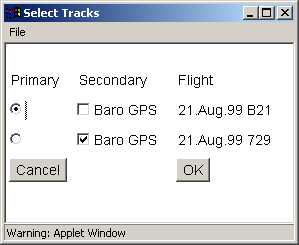

IGCview Replay Help
(close this window)IGCview Replay Help
(close this window)
IGCview Replay Help
(close this window)IGCview Replay Help
(close this window)These notes explain how to replay (maggot race) your loaded IGC logs.
Load multiple tracks using the or buttons. IGcview will maggot race all the loaded logs selected as 'primary' or 'secondary' in the select tracks window:
If you have only one IGC file loaded, IGCview will animate that one, but of course the thrill of the race will be less than when you have multiple logs loaded from a real competition day.
Maggot racing is as simple as loading the logs and clicking the
 button. The 'replay' will repeat until you click the
button. The 'replay' will repeat until you click the
 stop button.
stop button.
The left-side replay buttons which currently appear are:
 |
Replay Help. That button shows this help information. |
|
Synchro Start. This will maggot race the logs all synchronized to the same start time as the 'primary' log, so in a one-class competition the winner or your relative performance can be more easily assessed. |
 |
Realtime Start. This starts the clock at the earliest time in any of the selected
logs, and animates forward from there, so you see the different launch times and start times of
each pilot. Note that this may mean the race takes a long time to get started (some pilot may be
logging from 9am, even though the race doesn't get underway until the afternoon). In that
case the 'fast forward' function with repeated clicks of
 is useful. Click is useful. Click
 and then
to reset back to the default speed. and then
to reset back to the default speed.
|
|
Play Forwards/Faster. Each click will accelerate the clock in a forwards direction. |
 |
Play Backwards/Faster. The first click will change the direction of replay to 'backwards', and subsequent clicks accelerate the reverse clock. |
|
Pause. See if you can guess what this button does... to continue click
. |
|
Stop. Exits 'replay' mode and draws the logs back on the map. |